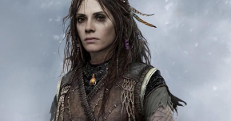
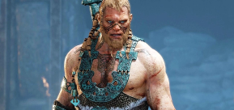
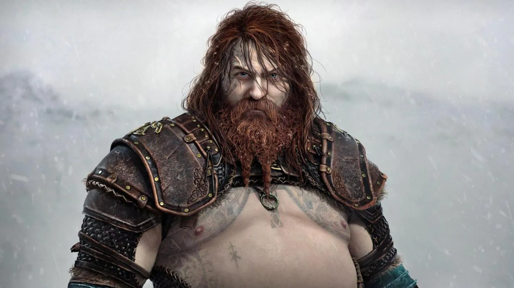
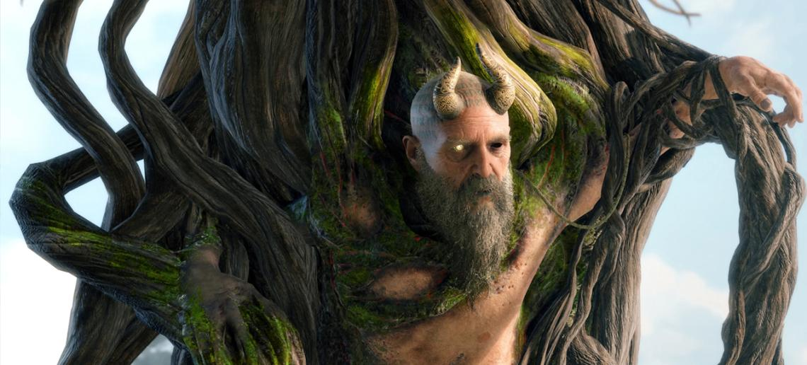

Dioses Nórdicos
Baldur
Baldur era un Aesir, hijo de Odín y
Freya,
y hermanastro de Thor y
Tyr, entre otros.

Freya
Freya era la madre de Baldur, y esposa de Odin.

Magni
Magni es el hijo mayor de Thor que aparece como enemigo junto a su hermano Modi.

Thor
Thor es hijo de Odin. Es el enimgo principal en el ragnarok y utiliza su martillo Mjöllnir, el arma mas poderosa de todas, para brotar el terror en los 9 reinos Modi.

Mimir
Mimir es el Señor de la Sabiduría y el Conocimiento, conocido popularmente por ser el hombre vivo más listo.